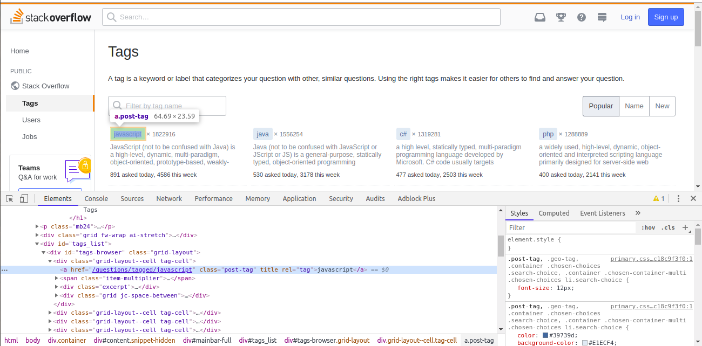
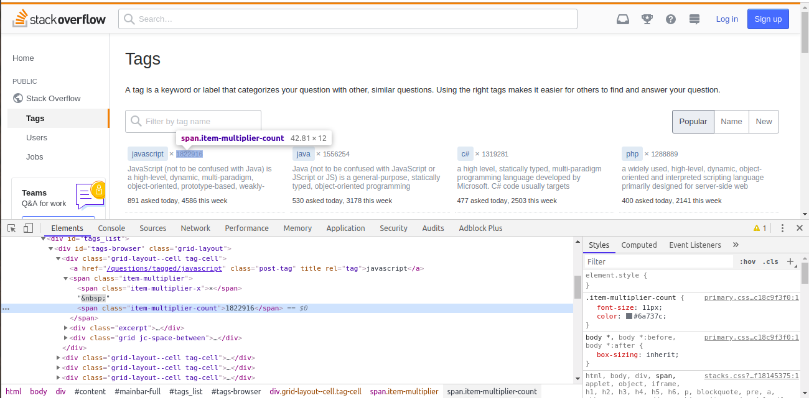
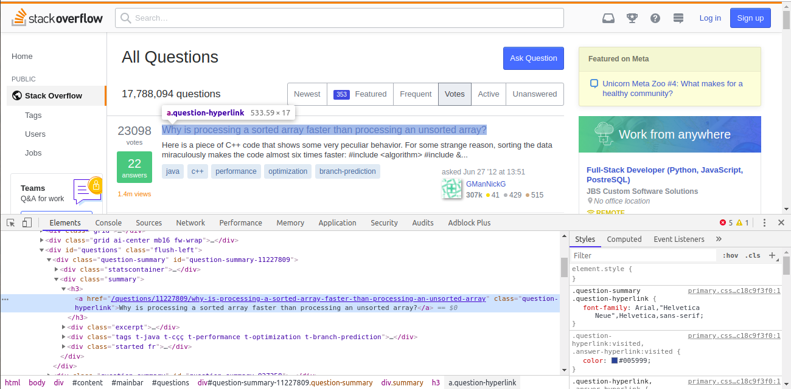
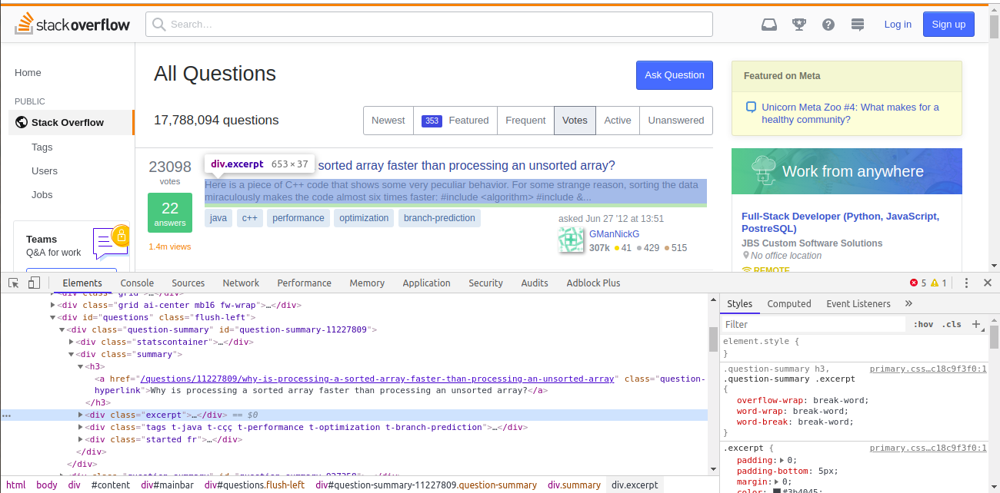

In [15]:
plt.figure(figsize=(8, 3))
plt.bar(height=df['Tag Count'][:10], x=df['Languages'][:10])
plt.xticks(rotation=90)
plt.xlabel('Languages')
plt.ylabel('Tag Counts')
plt.show()
![]()
In this project, we will scrap StackOverflow website and list:
Let's import all the required libraries and packages
import numpy as np # linear algebra
import pandas as pd # data processing, CSV file I/O (e.g. pd.read_csv)
import requests # Getting Webpage content
from bs4 import BeautifulSoup as bs # Scraping webpages
import matplotlib.pyplot as plt # Visualization
import matplotlib.style as style # For styling plots
from matplotlib import pyplot as mp # For Saving plots as images
# For displaying plots in jupyter notebook
%matplotlib inline
style.use('fivethirtyeight') # matplotlib Style
Before starting our project, we need to understand few basics regarding Web Pages and Web Scraping.
When we visit a page, our browser makes a request to a web server. Most of the times, this request is a GET Request. Our web browser then receives a bunch of files, typically (HTML, CSS, JavaScript). HTML contains the content, CSS & JavaScript tell browser how to render the webpage. So, we will be mainly interested in the HTML file.
HTML has elements called tags, which help in differentiating different parts of a HTML Document. Different types of tags are:
html - all content is inside this taghead - contains title and other related filesbody - contains main cotent to be displayed on the webpagediv - division or area of a pagep - paragrapha - linksWe will get our content inside the body tag and use p and a tags for getting paragraphs and links.
HTML also has class and id properties. These properties give HTML elements names and makes it easier for us to refer to a particular element. `Class` can be shared among multiple elements and an element can have moer then one class. Whereas, `id` needs to be unique for a given element and can be used just once in the document.
The requests module in python lets us easily download pages from the web.
We can request contents of a webpage by using requests.get(), passing in target link as a parameter. This will give us a response object.
Beautiful Soup library helps us parse contents of the webpage in an easy to use manner. It provides us with some very useful methods and attributes like:
find(), select_one() - retuns first occurence of the tag object that matches our filterfind_all(), select() - retuns a list of the tag object that matches our filterchildren - provides list of direct nested tags of the given paramter/tagThese methods help us in extracting specific portions from the webpage.
We will download the tags page from stackoverflow, where it has all the languages listed with their tag count.
# Using requests module for
response = requests.get('https://stackoverflow.com/tags')
# Getting status of the request
# 200 status code means our request was successful
# 404 status code means that the resource you were looking for was not found
response.status_code
# Parsing html data using BeautifulSoup
soup = bs(response.content, 'html.parser')
# body
body = soup.find('body')
# printing the object type of body
type(body)
In order to acheive this, we need to understand HTML structure of the document that we have. And then, narrow down to our element of interest.
One way of doing this would be manually searching the webpage (hint: print body variable from above).
Second method, is to use the browser's Developr Tools. We will use this second one.
On Chrome, open tags page and right-click on the language name (shown in top left) and choose Inspect.

We can see that the Language name is inside a tag, which in turn is inside a lot of div tags. This seems, difficult to extract. Here, the class and id, we spoke about earlier comes to our rescue.
If we look more closely in the image above, we can see that the a tag has a class of post-tag. Using this class along with a tag, we can extract all the language links in a list.
lang_tags = body.find_all('a', class_='post-tag')
lang_tags[:5]
Using list comprehension, we can now extract all the language names.
languages = [i.text for i in lang_tags]
languages[:5]
To extract tag counts, we need to follow a process similar to the above one.
On Chrome, open tags page and right-click on the tag count, next to the top language (shown in top left) and choose Inspect.

Here, the tag counts are inside span tag, with a class of item-multiplier-count. Using this class along with span tag, we will extract all the tag count spans in a list.
tag_counts = body.find_all('span', class_='item-multiplier-count')
tag_counts[:5]
Using list comprehension, we can now extract all the Tag Counts.
no_of_tags = [int(i.text) for i in tag_counts]
no_of_tags[:5]
To put the two lists together, we will follow these steps:
a = dict(zip(languages, no_of_tags))
df = pd.DataFrame.from_dict(a, orient='index').reset_index()
df.columns = ['Languages', 'Tag Count']
df.head()
Now, we will plot the Top Languages along with their Tag Counts.
plt.figure(figsize=(8, 3))
plt.bar(height=df['Tag Count'][:10], x=df['Languages'][:10])
plt.xticks(rotation=90)
plt.xlabel('Languages')
plt.ylabel('Tag Counts')
plt.show()
Now that we have collected data using web scraping one time, it won't be difficult the next time.
In Goal 2 part, we have to list questions with most votes along with their attributes, like:
I would suggest giving it a try on your own, then come here for matching your solution.
Note: Their can be many ways to scrape data, so you should explore and try to get data in your own way.
Similar to previous step we will make a list of steps to act upon:
We will download the questions page from stackoverflow, where it has all the top voted questions listed.
Here, I've appended ?sort=votes&pagesize=50 to the end of the defualt questions URL, to get a list of top 50 questions.
# Using requests module for
response1 = requests.get('https://stackoverflow.com/questions?sort=votes&pagesize=50')
# Getting status of the request
# 200 status code means our request was successful
# 404 status code means that the resource you were looking for was not found
response1.status_code
body1.select("div p")
In this section, we will use select() and select_one() to return BeautifulSoup objects as per our requierment.
While find uses tags, select uses CSS Selectors in the filter.
For example:
p a — finds all a tags inside of a p tag.
soup.select('p a')div.outer-text — finds all div tags with a class of outer-text.div#first — finds all div tags with an id of first.body p.outer-text — finds any p tags with a class of outer-text inside of a body tag.# Parsing html data using BeautifulSoup
soup1 = bs(response1.content, 'html.parser')
# body
body1 = soup1.select_one('body')
# printing the object type of body
type(body1)
On Chrome, open questions page and right-click on the top question and choose Inspect.

We can see that the question is inside a tag, which has a class of question-hyperlink. Using this class along with a tag, we can extract all the question links in a list.
question_links = body1.select("a.question-hyperlink")
question_links[:5]
Using list comprehension, we can now extract all the questions.
questions = [i.text for i in question_links]
questions[:5]
On Chrome, open questions page and right-click on summary of the top question and choose Inspect.

We can see that the question is inside div tag, which has a class of excerpt. Using this class along with div tag, we can extract all the question links in a list.
summary_divs = body1.select("div.excerpt")
summary_divs[:5]
Using list comprehension, we can now extract all the questions.
Here, we will also use strip() method on each div's text. This is to remove both leading and trailing unwanted characters from a string.
summaries = [i.text.strip() for i in summary_divs]
summaries[:5]
print(summaries[0])
On Chrome, open questions page and right-click on summary of the top question and choose Inspect.
We can see that the question is inside div tag, which has a class of excerpt. Using this class along with div tag, we can extract all the question links in a list.
summary_divs = body1.select("div.excerpt")
summary_divs[:5]
Using list comprehension, we can now extract all the questions.
Here, we will also use strip() method on each div's text. This is to remove both leading and trailing unwanted characters from a string.
summaries = [i.text.strip() for i in summary_divs]
summaries[:5]
print(summaries[0])